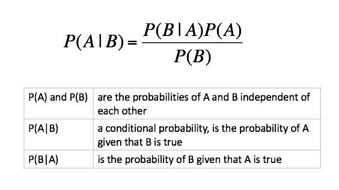
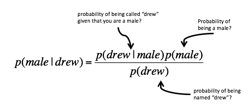
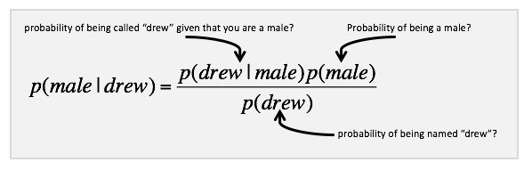
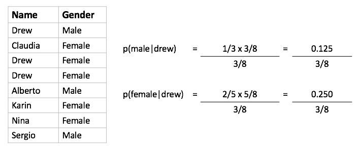
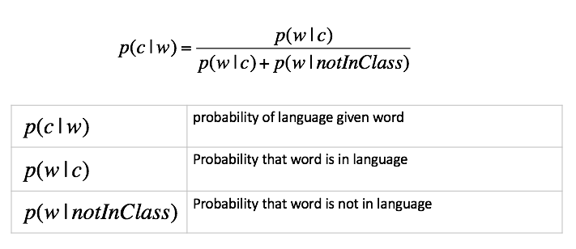
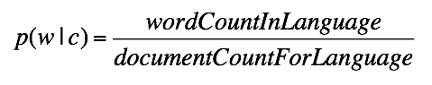
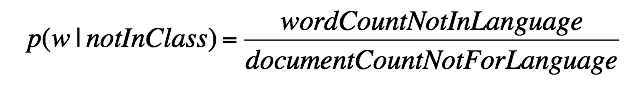
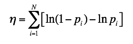
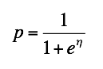

Machine Learning
Naive Bayesian Classification

Introduction
Video Source: https://www.youtube.com/watch?v=_DsO4ZSYpHU
Bayes Theorem

Classification of Drew
Example: Classification of Drew
- We have two classes: c1=male, and c2=female
- Classifying drew as male or female is equivalent to asking is it more probable that drew is male or female.

Using Data


Bayesian Approach
- Posterior probability based on prior probability plus a new event
Classification of Documents
Questions We Can Answer
- Is this spam?
- Who wrote which Federalist papers?
- Positive or negative movie review?
- What is the subject of this article?
Text Classification
- Assigning subject categories, topics, or genres
- Authorship identification
- Age/gender identification
- Language Identification
- Sentiment analysis
- ...
For Active Learning we will use*

* http://en.wikipedia.org/wiki/Naive_Bayes_spam_filteringCalculating Probabilities
- probability that word shows up in a language 
- probability that word is not in language 
Underflow Prevention
- Multiplying lots of probabilities can result in floating-point underflow. Since log(xy) = log(x) + log(y); better to sum logs of probabilities instead of multiplying probabilities.
- Add probability of words (per language) using:
 - In JavaScript ln is Math.log, and e is Math.exp
- At completion of each language:
